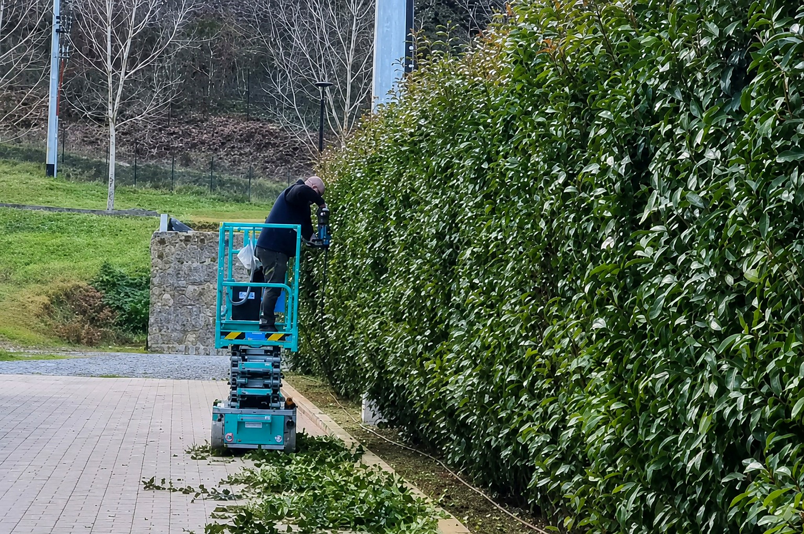
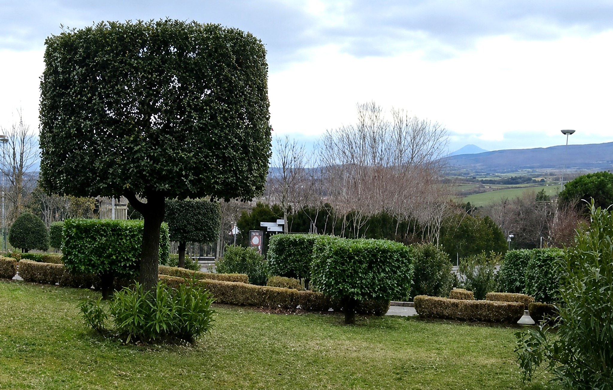
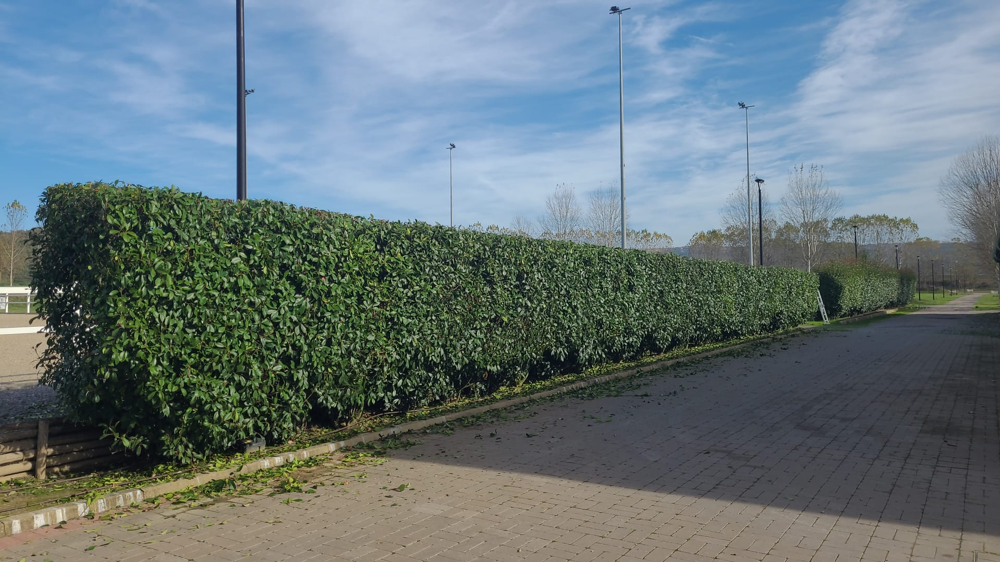
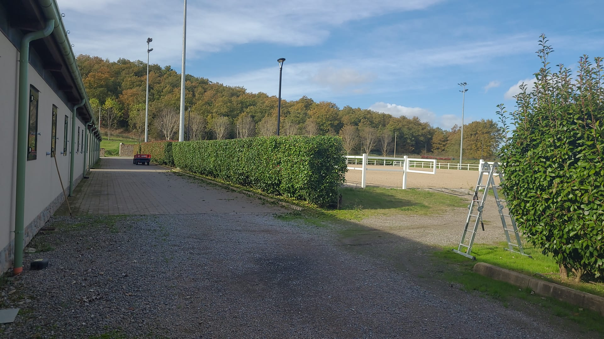
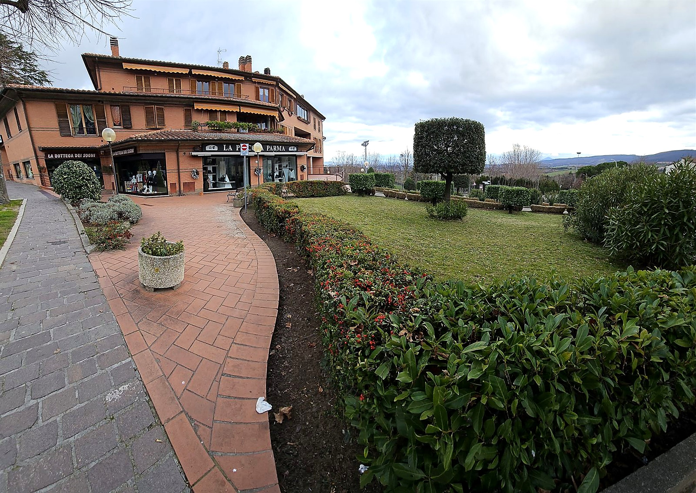

Esperienza, studio e cura del dettaglio.
Una siepe si pota per restare fitta
Una siepe non si pota per contenerla e basta: si pota perché resti fitta. Il verde di una siepe è uno strato sottile, spesso pochi centimetri, che vive sulla superficie esposta alla luce. Sotto c'è legno, e il legno non fa foglie.
Da qui derivano due criteri pratici. Il primo: si taglia dentro la vegetazione, lasciando ogni volta un po' più di quanto c'era prima del getto. Una siepe potata così si allarga lentamente e resta piena; una potata sempre sullo stesso punto si svuota, perché lo strato verde si assottiglia fino a scoprire i rami.
Il secondo riguarda la forma. La base va tenuta più larga della cima, non il contrario: se la parte alta sporge, ombreggia quella bassa, e la siepe si spoglia da terra in su. È l'errore più comune e si vede a distanza di anni, non subito.
Sono gli stessi criteri con cui impostiamo una potatura su qualsiasi pianta, applicati a una struttura che va guardata come una superficie continua invece che come un singolo albero.

Tre siepi, tre modi di lavorare
Riconoscere in quale dei tre casi si sta lavorando è la prima cosa che si fa in sopralluogo, prima ancora di stabilire quanto togliere.

Conifere da siepe
Le conifere da siepe, cipresso e tuia, non ricacciano dal legno privo di verde. Il taglio resta sempre dentro la vegetazione: superato quel confine il vuoto rimane, e nella maggior parte dei casi non si richiude più. Su queste siepi conta la regolarità, non l'intensità — si passa più spesso e si toglie poco.

Sempreverdi a foglia larga
I sempreverdi a foglia larga, come lauroceraso e alloro, tollerano tagli più decisi e rimettono anche da legno vecchio. Il problema è un altro: la barra del tagliasiepi trancia le foglie a metà e i bordi tagliati imbruniscono nei giorni successivi. Dove il risultato deve essere pulito si lavora a forbice, ramo per ramo, e la siepe non mostra il segno dell'intervento.

Siepi di caducifoglie
Le siepi di caducifoglie, dal carpino al ligustro, sopportano gli interventi più profondi. A pianta spoglia la struttura si legge: si capisce quali branche portano la vegetazione esterna, dove la siepe si è allargata oltre il filo e quanto si può riportare indietro senza andare alla cieca.
Abbassare una siepe cresciuta troppo
Non riportare giù una siepe in una volta sola
Sotto lo strato verde c'è legno, e su molte specie il legno non rimette.
Quando una siepe è cresciuta oltre l'altezza voluta, l'intervento che verrebbe naturale è portarla giù in una volta, alla quota che serve. Su molte specie è la mossa che la rovina.
Se il taglio scende sotto lo strato verde, resta legno nudo. Su una conifera non torna vegetazione: la siepe rimane spellata su tutta la lunghezza e l'unica strada è sostituirla. Su una latifoglia il verde di solito torna, ma ci vuole più di una stagione, e nel frattempo la siepe non fa la sua funzione.
Dove la specie lo consente si abbassa per gradi, in più passaggi, lasciando ogni volta verde sufficiente a nutrire la pianta. Dove non lo consente si valuta prima se conviene rifarla, invece di scoprirlo dopo il taglio: è una delle situazioni tipiche di un giardino lasciato indietro, dove il recupero si programma per priorità e non si improvvisa.

FAQ
Domande sulla potatura delle siepi
Tagliasiepi o forbici: cambia qualcosa nel risultato?
Cambia, e dipende dalla foglia. Sulle conifere e sulle siepi a foglia piccola la barra dà una superficie regolare e il taglio non si nota.
Sulle foglie larghe la barra le trancia a metà e i bordi anneriscono, quindi dove la siepe si guarda da vicino si passa a forbice, ramo per ramo. È più lento, ma il verde resta intero e la siepe non porta il segno del passaggio per settimane.
Una siepe che si è spogliata in basso si può recuperare?
Dipende dalla specie e da quanto è avanzata. Se sotto il vuoto restano rami con ancora qualche foglia, si può riportare luce sulla parte bassa alleggerendo la cima e restringendo il profilo, e la vegetazione torna a riempire dal basso.
Se invece è rimasto solo legno nudo su una specie che non ricaccia, il verde non torna. In quel caso le strade vere sono due: convivere con la base scoperta mascherandola con una piantumazione davanti, oppure rifare quel tratto di siepe. Lo diciamo in sopralluogo, prima di iniziare.
Perché dopo la potatura la siepe ingiallisce in alcuni punti?
Nella maggior parte dei casi è la vegetazione interna, cresciuta all'ombra, che si trova esposta al sole tutta insieme dopo il taglio. Si riprende da sola nel giro di qualche settimana.
Quando invece l'ingiallimento è a chiazze che si allargano, interessa anche i getti nuovi o parte da un punto solo, non è il taglio: è un problema della pianta, e conviene farlo guardare invece di aspettare la prossima potatura.